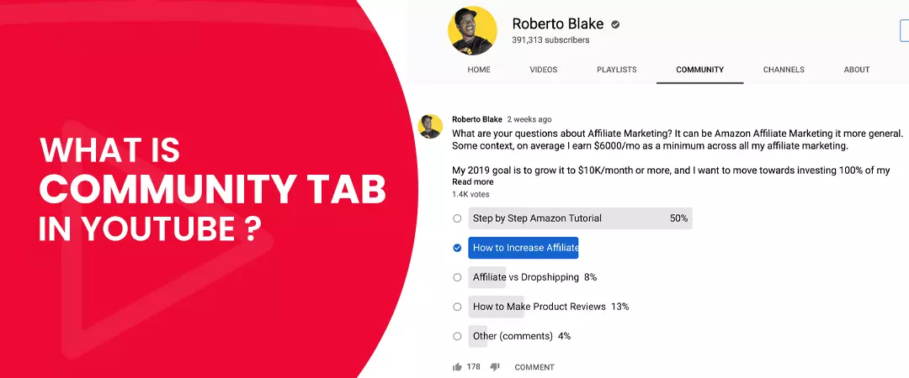
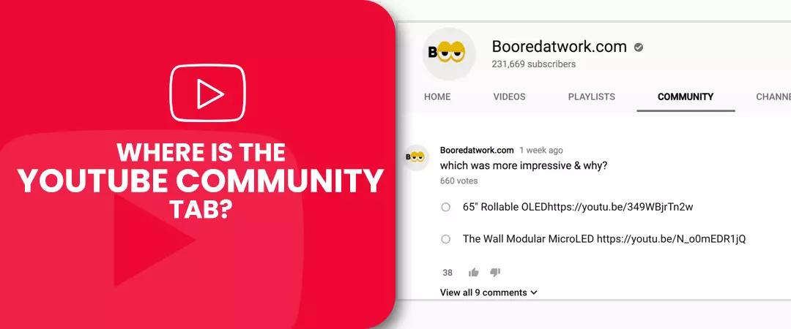
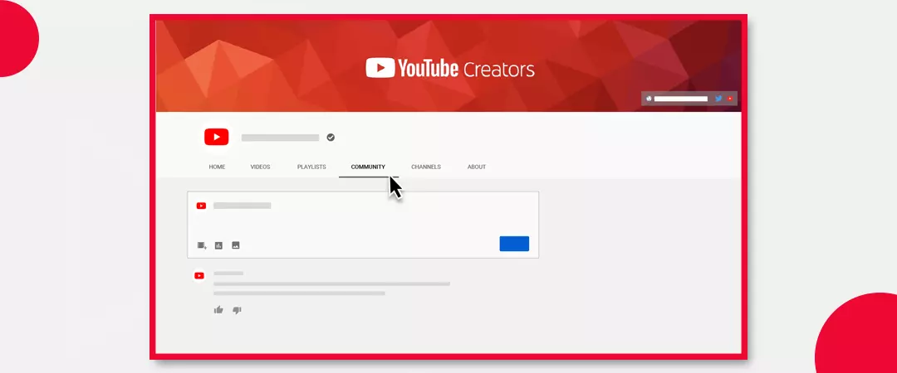
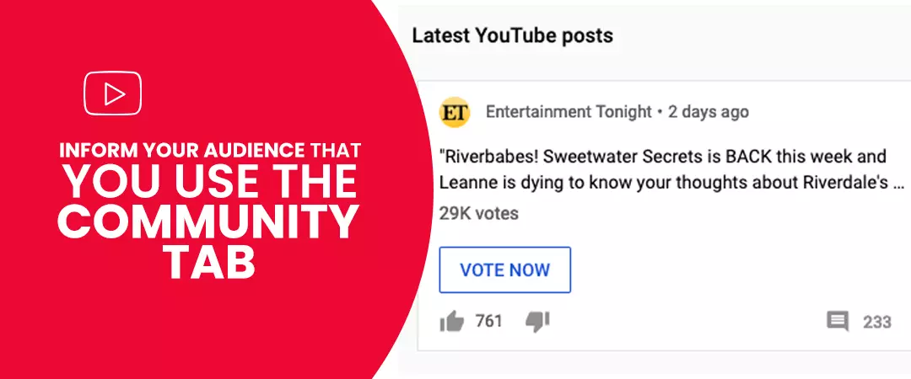
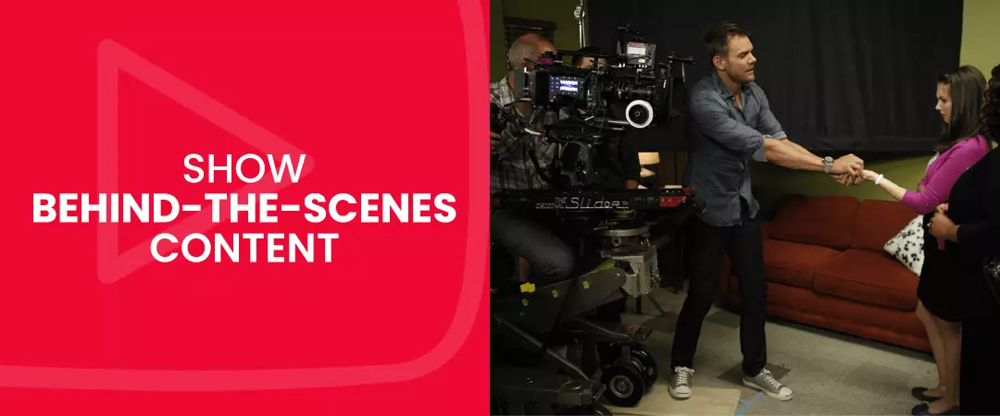
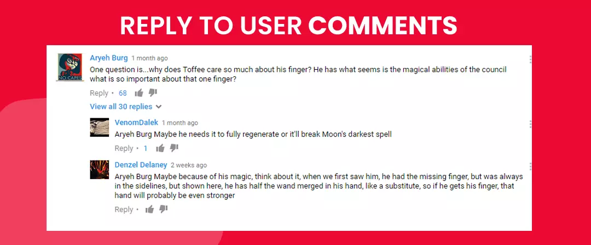
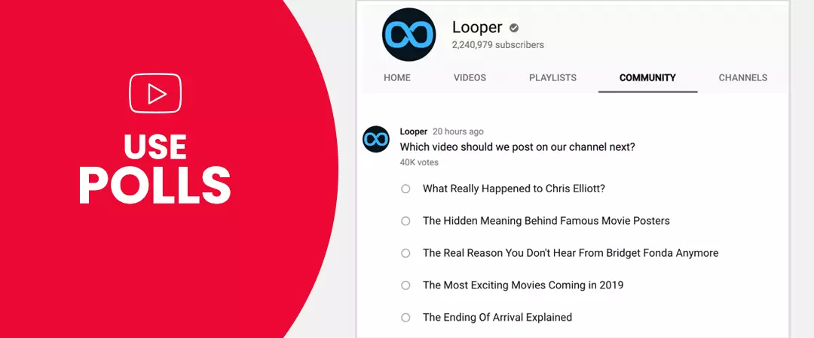
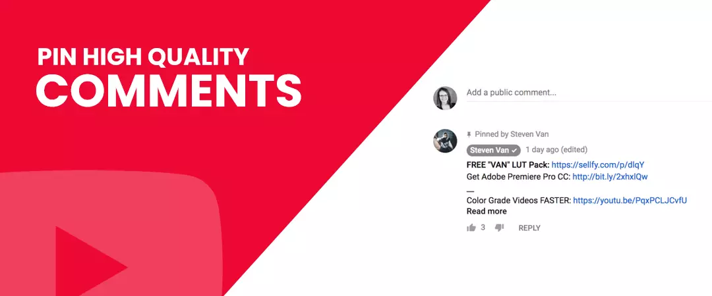
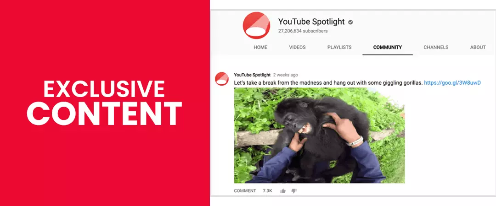
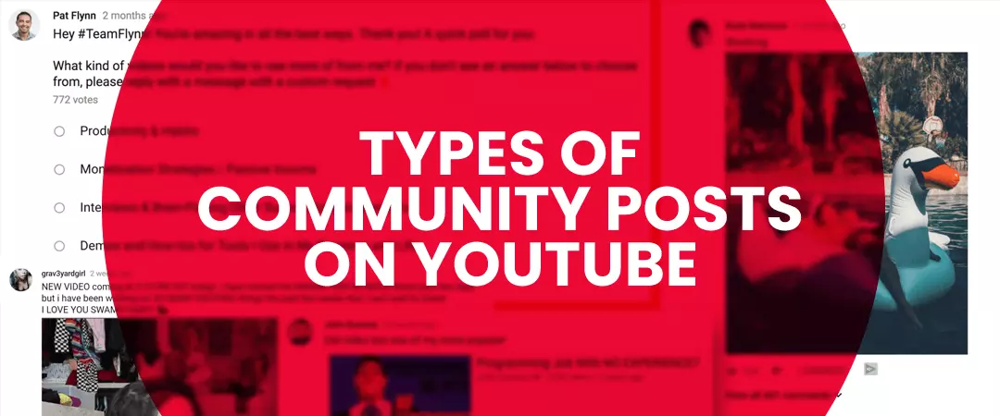

Every year YouTube is drawing widespread attention from marketers around the world. 89% of marketers plan to initiate YouTube as part of their marketing strategy for 2021.
Maintaining consistency in fresh content uploads is essential, but grabbing the attention of your viewers always takes the upper hand. Hence, it is more important now than ever to build a strong community of loyal followers – this is only possible by constantly keeping in touch with your audience.
It seemed like an optional choice for many creators. But the community tab on YouTube has proven to be one of the best features to build and maintain strong relationships with users. When you manage to pluck on the emotional heartstrings of your people successfully - they will help your channel grow by promoting your videos on multiple social platforms. Moreover, your followers can express their opinions via likes/dislikes or comments. You can also acquire insights into your audience's choice of content.
What to know more about the feature? You have come to the right place. Stick with us as we discuss how to enable and use the community tab.
Contents
- 1. What Is the Community Tab in YouTube?
- 2. Where is the YouTube Community Tab?
- 3. How to Make Community Posts on YouTube?
- 4. Inform Your Audience That You Use the Community Tab
- 5. Show Behind the Scene Content
- 6. Reply to User Comments
- 7. Use Polls
- 8. Pin High-Quality Comments
- 9. Exclusive Content
- 10. Types of Community Posts on YouTube
What Is the Community Tab in YouTube?

The community tab is a feature provided by the platform that enables creators to interact with their audience outside of their videos. You can engage with your viewers before and after you have uploaded a new video via text gifs, polls and images.
At first glance, you might draw similarities between the earlier discussion tab and the newly launched community tab - but there are some notable differences. The former had limitations - you could only post statuses using text. Whereas, when it comes to the latter, you are provided with many options - you can post status consisting of images, links, GIFs, and text. Moreover, your audience can like and also reply to your posts.
How Many Subscribers Do You Need to Get the Community Tab?
To become eligible for the community tab, you need to have equal to or more than 1000 subscribers on your channel. Even after you meet the requirements, you will have to wait for at least a week before you start seeing the community tab.
Note: if you already have more than 1000 subscribers on your YT channel and still do not see the community tab, then enable custom channel layouts - the tab will be visible.
Where is the YouTube Community Tab?

YouTubers that have enabled or gained access to the community tab can find the same on their home page.
To find a creators community tab, go through the following steps:
- First, you have to access YouTube.com .
- Search for your desired channel.
- To go to the homepage, tap on the channel name.
- Press community on the navigation bar.
- Now you can look at all the community posts published by the channel admin.
Mobile users need to use the YouTube app. The community tab is not visible when you access YT from your mobile browser.
From YouTube's official app, you can find the community tab on the channel's home page.
Also read: How to Create YouTube Stories
How to Make Community Posts on YouTube

As soon as you enable or gain access to your community tab, your next move will be to start engaging with your audience by posting statues.
Follow the below steps to create and schedule your first community post:
Create A Community Post
- First, sign in to YouTube.com
- Select 'Upload' on top of your page.
- Next, press on 'Create post.'
- Now you will come across a box.
- Enter a message if you want to create a text post or add text to a photo, GIF, or video.
- You have the option to create a video, image, poll, or post.
- Tap on 'Post'
Schedule a Community Post
Suppose you do not want to publish your status immediately but want to schedule your post instead. Then look at the following steps - once you arrive at the fourth stage of creating a community post.
- Press the down arrow beside 'Post' and choose 'Schedule Post' instead.
- Specify time, date, and time zone for post upload.
- Tap on 'Schedule.'
Mention Other Channels in Your Post
You can use your community post to mention other channels on YouTube - include @ before the channel name. The underlying channel will get notification of your mention.
You will direct the audience to the channel page as soon as they tap on your mention.
How to Use the Community Tab on YouTube?
Inform Your Audience That You Use the Community Tab

Videos are the primary expectations audiences have from your channel. One best practice will be to create one video informing them about your use of the community tab.
You can include the link to your community tab in your video's description. Copy the URL from the address bar. In your video, make sure to provide all necessary information needed by your viewers so that they can take the required actions when it's time to interact with your community post.
Show Behind the Scene Content

When you dish out high-quality content that gains widespread recognition from your audience, people would most likely want to know what all went down behind closed doors. The YT community tab is ideal for giving your audience a glimpse of what went into creating the content.
Besides BTS, you can also create posts to promote your new videos - compelling viewers to click-through and watch your content. Not just fresh videos, you can also gain exposure for content already existing on your channel.
Like many other creators, you can also buy YouTube subscribers. People who have subscribed to your channel are the first ones who will see your community post on their home feed.
Reply to User Comments

We cannot stress this enough: you need to interact with your viewers every chance you get. You don't have to reply to everyone on your community post. Still, a small gesture of liking a comment can go a long way in building a solid and everlasting relationship with your audience, helping you grow YouTube channel.
Users receive a notification when you hear or respond to their reply, so you can be sure that people will know what you did. Appreciation of their opinions will compel them to back frequently and engage with content available on your channel.
Use Polls

As a creator, you have to produce videos that will appeal to your audience. Use the community tab on YouTube to conduct polls so that you can understand your user's preference of content. Polls are also ideal if you are in the process of organizing a competition or a giveaway and require feedback from your subscribers.
Pin High-Quality Comments

You can always ignore negative comments. But more often than not, you receive high-quality comments, so much so that you want other network users to witness it when they come to your community post. You can pin such statements so that they take the top spot in the discussion.
Exclusive Content

Popular Influencers are active on different platforms. Hence, they are occupied with creating multiple posts at a time. Make sure to not upload the same content on YT that is already existing on other social networking sites like Instagram or Twitter. Your audience will not bother engaging with your community post if they already witnessed something similar elsewhere. The YT community tab should only include exclusive content that your viewers won’t find anywhere else.
Also read: How to Use Youtube Shorts
Types of Community Posts on YouTube

- Navigate to the playlist of your choice, and copy the URL.
- Next, go to the text field of your community post and paste the link.
- The maximum size limit is 16 MB.
- JPG to PNG GIF and WebP are the file types supported for a community post
- Keep the aspect ratio of 1:1 since this is how your pictures will appear in your audience's feed.
- Select a video by searching on YouTube
- Copy and paste the URL of a video.
- Use a video from your YouTube channel.
- Provide a question in the text field
- Go to the 'add option' field to provide answers.
- Select '+add another option if the number of answer fields is not sufficient for your question.
Text Post
You can post your text by accessing the community tab on YouTube and inserting your message in the available text box. Except for polls, you can couple your message with a picture, video, or GIF.
Playlist Posts
Once you are eligible for a community post, you can shout out to artists by posting their playlists.
To add a playlist ,
Image and GIF
If your choice of YT community post is an image, then you are required to upload a photo or a GIF animation from your device's internal storage.
Points to remember:
Reminder: Make sure all your pictures adhere to the platform’s community guidelines.
Video Posts
For videos as your community post, you can choose to follow any of the following steps:
When you use videos that belong to another creator, he/ she will receive a notification about your video community post.
Polls
To create a poll, you have to
Note: You have a maximum character limit of 65 for the poll option.
To Sum Up…
The video streaming platform has provided a fantastic feature in the form of the YouTube community tab. Creators are not limited to their videos - they can use the tab to perform various activities, such as hosting Q&As, conducting polls, updating statuses, and so much more.
We hope that you found our blog helpful. Do check out more such articles on our site.
Did you already get access to your community tab? What type of community posts do you fancy?
Feel free to share.